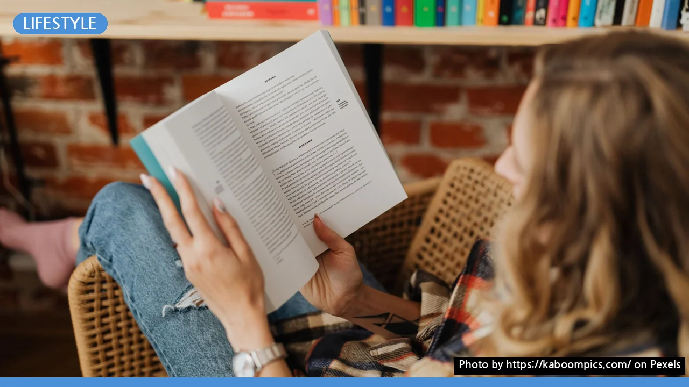

독서 습관 만들기, 하루 15분으로 시작해 꾸준히 이어가는 5단계 비법
사진: https://kaboompics.com/ / Pexels (무료 이미지, 출처 표기)
독서 습관, 왜 지금 시작해야 할까요?
독서 습관을 만들고 싶지만 막상 실천이 어려우신가요? 많은 분들이 독서의 중요성은 알지만, 바쁜 일상 속에서 책 읽을 시간을 따로 내는 것에 부담을 느낍니다. 하지만 독서는 생각보다 거창한 일이 아닙니다. 꾸준한 독서는 사고력, 집중력, 어휘력을 향상시키고, 스트레스 해소에도 도움을 줍니다.
이 글에서는 하루 15분부터 시작하여 독서를 일상생활의 자연스러운 일부로 만드는 실용적인 5단계 방법을 안내합니다. 지금부터 함께 독서 습관을 만드는 여정을 시작해 보세요.
1단계: 작고 구체적인 독서 목표 설정하기
독서 습관을 만들 때 가장 중요한 것은 '달성 가능한' 목표를 세우는 것입니다. 처음부터 너무 많은 양을 목표로 하면 쉽게 지치고 좌절할 수 있습니다. 예를 들어, '매일 1시간 책 읽기'보다는 '매일 잠들기 전 15분 독서'나 '일주일에 책 1권 읽기'와 같이 구체적이고 작은 목표가 효과적입니다.
작은 목표를 달성하며 성공 경험을 쌓는 것이 중요합니다. 이 목표는 책의 페이지 수나 시간으로 정할 수 있으며, 자신에게 가장 편안한 방법을 선택하는 것이 좋습니다. 처음에는 가벼운 마음으로 접근하여 독서에 대한 긍정적인 경험을 만드는 데 집중하세요.
2단계: 나에게 맞는 '첫 책' 현명하게 고르는 팁
독서의 즐거움을 느끼기 위해서는 흥미 있는 책을 고르는 것이 중요합니다. 재미없는 책을 억지로 읽으려 하면 독서 자체가 고통으로 느껴져 습관 형성에 방해가 됩니다. 다음과 같은 팁을 참고하여 첫 책을 선택해 보세요.
- 관심 분야부터 시작: 평소 흥미를 느끼던 분야의 책(예: 역사, 과학, 자기계발 등)을 고르면 몰입하기 쉽습니다.
- 가볍게 읽을 수 있는 책: 처음부터 고전이나 전문 서적보다는 에세이, 소설, 가벼운 교양서 등을 추천합니다.
- 도서관이나 서점 활용: 직접 책을 둘러보며 마음에 드는 제목, 표지, 도입부를 가진 책을 선택하는 것도 좋은 방법입니다.
- 베스트셀러보다는 나에게 맞는 책: 남들이 좋다고 하는 책보다는 자신의 취향과 수준에 맞는 책을 선택하는 것이 중요합니다.
3단계: 방해 없는 독서 환경 만들고 루틴 정하기
독서 습관을 성공적으로 정착시키려면 독서에 집중할 수 있는 환경을 조성하고 일정한 루틴을 만드는 것이 필수적입니다. 아래 가이드를 참고하여 자신만의 독서 공간과 시간을 만들어 보세요.
독서 환경 조성 체크리스트
독서 루틴 정하기: 매일 같은 시간에 책을 읽는 습관을 들이세요. 예를 들어, 아침에 일어나 커피를 마시면서 15분, 잠자리에 들기 전 15분 등이 좋습니다. 일정한 시간을 정해두면 뇌가 독서 모드로 전환하는 데 도움을 주어 더욱 쉽게 집중할 수 있습니다.
4단계: 완독 부담 줄이고 꾸준히 이어가는 전략
독서 습관을 방해하는 가장 큰 요소 중 하나는 '책 한 권을 무조건 끝까지 읽어야 한다'는 완독에 대한 강박입니다. 하지만 모든 책이 나와 맞을 수는 없습니다. 만약 책이 재미없거나 흥미를 잃었다면 과감하게 다른 책으로 넘어가는 유연함이 필요합니다.
- 지루하면 다른 책으로: 독서는 즐거움이 동반되어야 합니다. 읽다가 흥미를 잃었다면 잠시 내려놓고 다른 책을 읽어보세요. 나중에 다시 읽었을 때 새롭게 다가올 수도 있습니다.
- 속도에 연연하지 않기: 빨리 읽는 것보다 내용을 이해하고 즐기는 것이 더 중요합니다. 자신의 속도에 맞춰 천천히 읽어도 괜찮습니다.
- 오디오북 활용: 이동 중이나 집안일을 할 때 오디오북을 활용하는 것도 좋은 방법입니다. 독서의 형태는 다양하게 확장될 수 있습니다.
5단계: 독서 기록으로 성취감 느끼고 확장하기
독서 기록은 습관을 굳히는 데 매우 효과적인 방법입니다. 자신이 얼마나 읽었는지 시각적으로 확인하면서 성취감을 느끼고 동기를 부여받을 수 있습니다.
- 간단한 기록 남기기: 독서 노트에 인상 깊었던 구절이나 느낀 점을 짧게 적거나, 독서 앱(예: 밀리의 서재, 리디북스 등)을 활용해 읽은 책 목록을 관리해 보세요.
- 독서 커뮤니티 참여: 독서 모임이나 온라인 독서 커뮤니티에 참여하여 다른 사람들과 의견을 나누면 독서에 대한 흥미를 더욱 높일 수 있습니다.
- 작은 보상 설정: 일정 목표(예: 5권 읽기)를 달성했을 때 자신에게 작은 보상(예: 맛있는 음료 마시기, 영화 한 편 보기)을 주는 것도 좋은 동기 부여가 됩니다.
이렇게 독서 습관이 어느 정도 굳어졌다면, 점진적으로 독서 시간이나 책의 난이도를 늘려나가면서 독서의 폭을 넓힐 수 있습니다. 꾸준함이 가장 중요합니다. 2026년 08월 기준으로, 독서는 여전히 스스로를 성장시키는 가장 좋은 방법 중 하나입니다. 오늘부터 자신만의 독서 여정을 시작해 보세요.
🔗 이 글도 함께 보면 좋아요: 에어프라이어 완벽 활용 가이드: 초보자도 실패 없는 핵심 비법 5가지
관련 추천 상품
이 포스팅은 쿠팡 파트너스 활동의 일환으로, 이에 따른 일정액의 수수료를 제공받습니다.